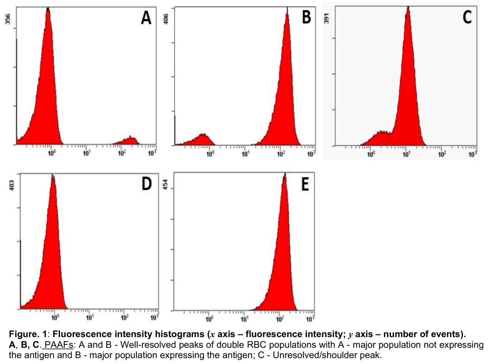

Technical Documents · TD2026HBT
Edition v1.0, 2026 (version 1.0) · effective 1 January 2026 · current
Retrieved on 26 November 2026 from https://www.wada-ama.org/sites/default/files/2025-09/td2026hbt_final_eng.pdf
p. 1
Detection of Homologous Blood Transfusion (HBT) by Flow Cytometry
1.0 Introduction
The purpose of this Technical Document (TD) is to harmonize the analysis for detection of Homologous Blood Transfusion (HBT) in whole blood by Flow Cytometry (FC)[1-4]. The Laboratory is required to apply the criteria established in this TD in the routine performance of FC-based methods to detect HBT in whole blood Samples.
HBT is the transfer of blood (or of the Red Blood Cell (RBC) fraction) between individuals of the same species (for the purpose of this TD application, between humans). One individual is the donor, and the other the recipient of the blood/RBC. This blood/RBC booster causes an increase in the recipient's RBC numbers, resulting in extra oxygen transport to muscles, conferring an unfair advantage in athletic performance.
For HBT to be efficient (i.e., the transferred blood/RBCs are not rejected by the recipient's immune system), both individuals shall be compatible in terms of their major ABO and Rh RBC antigen systems. However, due to the large number of blood group antigens on RBCs and their variability among individuals, it is unlikely that the donor and the recipient are perfectly matched. Therefore, the donor and the recipient will differ in the expression of some minor RBC surface antigens. Of particular interest are the following minor RBC antigens corresponding to secondary blood group systems:
Table 1. Examples of minor RBC antigens that may be targeted for detection of HBT
| Blood Group System | RBC Antigens |
|---|---|
| Duffy | Fya, Fyb |
| Kell | K, k |
| Kidd | Jka, Jkb |
| Lewis | Le-a, Le-b |
| MNS | M, N, S, s |
| P | P1 |
| Rh | C, c, E, e |
The cytofluorimetric method of detection of HBT is based on the analysis of RBC populations by FC utilizing minor RBC surface antigen-specific antibodies (Abs) [monoclonal antibodies (mAbs) and/or polyclonal antisera (PAbs)¹ ], which are used in combination with fluorescent-labeled secondary Abs[1-4]. In the event of HBT, this method allows the detection of two (2) distinct RBC populations, one coming
¹The use of mAbs is recommended, where possible.
p. 2
from the donor and the other from the recipient, which differ in their expression of minor RBC surface antigens. Typically, the minor population of the RBC mixture represents the blood of the donor.
2.0 Test Method Validation and Accreditation Requirements
The FC method for HBT detection is a WADA-specific Analytical Testing Procedure (ATP). Therefore, prior to its implementation in routine Doping Control analysis, the Laboratory² shall:
a) Validate the Test Method by determining the following validation parameters for a minimum of (8) target RBC antigens.
[Comment to Article 2.0 a): The Laboratory should select the eight (8) best antigens according to their region/population phenotypes[5, 6 ]. For example, RBC antigens that show a significant expression frequency bias (e.g., are expressed by all individuals in a population) should not be selected as part of the panel for HBT detection within that population. Conversely, the Laboratory may have to include additional target antigens when performing analyses during Major Events involving the participation of Athletes from different parts of the world.]
i. Optimal Ab dilution for each target RBC antigen
- The optimal Ab dilution should permit the detection of at least a 3% minor population of antigen-expressing cells in a double RBC population with the best possible peak separation³ .
- The Laboratory shall verify the optimal dilution, and correct it, if necessary, for each new lot of Ab by analyzing a control mix of expressing and non-expressing cells (e.g., commercially available erythrocyte preparations) for each target antigen.
²If not reasonably possible for HBT analyses to be performed in the existing facilities of a Laboratory for technical and/or geographical reasons, the whole-blood Samples can be analyzed at either i) a satellite facility of a Laboratory, or ii) using a mobile unit operated by a Laboratory under their ISO/IEC 17025 accreditation, or iii) at the facilities of a laboratory approved by WADA, which has the method within its Scope of ISO/IEC 17025 Accreditation, and if the ATP, including the maintenance of an appropriate Sample chain of custody, is performed by personnel of the Laboratory. Satellite facilities and mobile units of Laboratories shall also participate in at least one collaborative inter-laboratory comparison study or a WADA-organized EQAS and be ISO/IEC 17025 accredited.
³A peak is defined as a cluster of cells with similar properties in term of fluorescence, which appears in the histogram of fluorescence intensity as a "mountain" shape with a large base that narrows into a peak constituting the "summit". In addition to its shape, a peak will be considered only if the number of events (single cells) constituting the peak is at least (≥) 0.3% of the total number of events counted, after removal of the number of background events for the same area of the histogram from the corresponding negative control staining (e.g., staining with isotype-matched control Ab).
The height of the peak is proportional to the number of cells in the cluster. In cases when a second population of cells is present with a different status of antigen expression, a second peak (real cluster of cells with a summit, not dispersed events) can be observed: it has to be separated from the first peak, i.e., there must be an inflexion point between the base of the two peaks ("valley") to conclude that there is a double peak. It is important to consider that for some antigens the positioning of the peaks in the histogram (fluorescence intensity) may shift (typically decrease) as RBCs age. Hence the importance of stabilizing the RBC, keep them refrigerated (2-8°C) and perform the analysis as soon as possible.
p. 3
ii. Selectivity
- For determination of Selectivity, the Laboratory shall analyze a minimum of twenty (20) different human whole blood samples (e.g., blood collected from volunteers or in a hospital setting, or past blood Samples⁴ ) using optimized Ab dilutions.
- The criteria for acceptance of Selectivity include:
- Non-expressing samples: One single peak of non-expressing cells (left-hand side of the fluorescence histogram).
- Expressing samples: At least 90% of the gated RBC in one single peak of antigen-expressing cells (right-hand side of the fluorescence histogram).
[Comment to Selectivity: If 90% is not reached for some specific antigen known to have low expression (e.g., s, Fya Fyb), the Laboratory shall document and confirm the possibility to detect double populations of these antigens to include them in the detection panel.]
iii. Limit of Detection (LOD)
- The LOD, which is defined at 95% detection rate⁵ , shall be estimated for each target antigen from the analysis of different mixes of antigen expressing and non-expressing blood samples (e.g., from 5: 95% to 0.5: 99.5% of expressing to non-expressing cells, and vice-versa).
- The LOD shall be estimated as the minimum percentage (%) of the detectable minor RBC population in a histogram peak from the acquired RBC events demonstrating the presence of a double RBC population (e.g., 1%: 500 events in the minor peak if 50,000 total events are acquired, after subtraction of the background).
[Comment to LOD: The LOD may be different for detection of minor peaks of antigen expressing or non-expressing cells, i.e., it may depend on the status of antigen expression: minor non-expressing RBC population
⁴The Laboratory may only use a past blood Sample if the Sample has met the requirements for secondary use of Doping Control Samples for Quality Assurance purposes established in the ISL[8], including i) a procedure to remove or irreversibly alter any direct identifier(s) for de-identification of the Sample; ii) the expiration of the minimum applicable Sample storage period; iii) the absence of any request from the Testing Authority (TA) (or Results Management Authority (RMA), if different) or WADA for the long-term storage of the Sample for the purpose of Further Analysis, and iv) if the Sample is not subject to a pending challenge, dispute, or longitudinal study. In any case, the Laboratory shall consider whether such a Sample, having been stored for some time (minimum of 1 month) at the Laboratory without the addition of any stabilizer, would be suitable for HBT validation studies.
⁵The 95% detection rate for estimation of the LOD is defined as the lowest percentage of the minor RBC population (expressing or not expressing the antigen) that can be detected in 95% of samples containing double RBC populations at that antigen-expressing or -not expressing ratio, which are analyzed during Test Method validation.
For example, if twenty (20) samples are analyzed at different ratios of antigen-expressing to antigen-not expressing RBCs, and the lowest percentage of the minor antigen expressing cells for which the minor peak is detected in 95% of the twenty (20) samples analyzed at that ratio [i.e., in nineteen (19) out of twenty (20) samples] is 0.5%, then the LOD for that minor antigen is 0.5%. If less than twenty (20) samples are analyzed during Test Method validation, then the 95% detection rate LOD can be calculated by extrapolating the detection rate curve once a result is obtained at a minor RBC population ratio showing detection in less than (<) 95% of the samples.
in a mix with a major population of antigen expressing RBCs (or vice-versa). In any case, the LOD shall not be higher than 3% for at least one of double-population conditions (i.e., minor antigen-expressing population or vice-versa).]
p. 4
- The LOD shall be determined, at least, for the optimized ITP Ab dilution. If the optimal dilution is modified for a new Ab batch, the LOD shall be verified.
- The LOD shall be determined for each new primary Ab reference used.
iv. Reproducibility
- The Test Method's capacity to detect the minor RBC population under Reproducibility conditions (different days, different analysts, different cell preparations, different instruments, if applicable) shall be determined at least at 2 x LOD for the optimal Ab dilution. The reproducibility of detection shall be at least (≥) 95% detection rate for any RBC antigen tested.
v. Sample Stability
- The Laboratory shall determine the Test Method's performance capacity over time of storage of non-stabilized Samples, in order to establish the maximum time of Sample storage (under refrigerated conditions) that warrants maintenance of Sample integrity (absence of significant RBC hemolysis, maintenance of adequate antigen expression) for analysis (for example, for the performance of "B" Confirmation Procedures (CPs)). If not, this maximum storage time may be limited to one (1) month.
vi. Carryover
- The Laboratory shall validate the absence of carryover for each RBC antigen tested, including i) carryover in the flow cytometer, and ii) carryover after analyzing the Sample for the Markers of the Hematological Module of the ABP.
- The carryover (minor peak expression) shall be not greater than (≤) 10% of the validated LOD.
b) Participate successfully in at least one collaborative inter-laboratory comparison study or a WADA-organized EQAS in order to demonstrate readiness for assay implementation.
c) Get the Test Method included in the Laboratory's Scope of ISO/IEC 17025 Accreditation.
p. 5
3.0 Pre-analytical Procedure
Upon reception of the "A" and "B" Samples in the Laboratory, the following steps shall be followed:
a) Check that the blood Samples have been collected as whole blood in tubes containing EDTA as anticoagulant and in accordance with the WADA International Standard for Testing and Investigations (ISTI)[7]. A partial separation of plasma from the blood cell fraction is acceptable as long as the whole blood can be reconstituted by gentle mixing.
b) Any Samples delivered to the Laboratory as plasma/serum and/or collected in tubes containing an inert polymeric serum separator gel and a clotting activation factor (e.g., BD Vacutainer® SSTTM -II Plus tubes; BD Vacutainer® SSTTM -II Plus Advance tubes; BD Vacutainer® SSTTM tubes) shall not be accepted for the purposes of HBT analysis with the current Test Method.
c) To avoid hemolysis, blood Samples should have been kept in a refrigerated state (2-8°C), not frozen, following collection and during transportation to the Laboratory.
d) The Laboratory shall notify and seek advice from the TA regarding the rejection or Analytical Testing of Samples for which irregularities are noted (see ISL[8]). In cases of analysis of a Sample collected in the incorrect matrix, the results of such analysis shall be disregarded.
3.1 "A" Sample
a) Upon reception at the Laboratory, the "A" Sample shall be stored refrigerated (2-8°C) as soon as possible to reduce possible RBC hemolysis and maintain Sample stability.
[Comment to Article 3.1 a): If there is a request for the analysis of the Markers of the Hematological Module of the Athlete Biological Passport (ABP) and HBT analyses in the same Sample, the ABP analysis shall be prioritized. No aliquoting for HBT analysis shall be performed until the ABP analysis is concluded.
When additional requests are made for analysis on the blood plasma fraction of the Sample [e.g., for Erythropoietin Receptor Agonists (ERAs)], the Laboratory may complete the HBT analysis (including the ITP and, if applicable, the "A" CP) before centrifuging the Sample to obtain the plasma fraction for the additional analyses. Alternatively, the Laboratory may split the whole blood "A" Sample into two (2) or more Aliquots to be used for the performance of the HBT analysis in whole blood and for the analyses in the plasma fraction following centrifugation. Where the Sample volume becomes a critical factor for the performance of the requested analyses, the Laboratory shall consult with the TA to determine which analysis shall be prioritized.]
b) The "A" Sample analysis shall be conducted as soon as possible to, if required, enable the "B" Sample confirmation within the recommended timeframe (see Article 3.2).
c) Before aliquoting, the "A" Sample should be gently homogenized.
d) An Aliquot of the "A" Sample shall be taken to be used for the ITP. The "A" Sample Aliquot shall be stabilized using an RBC stabilizing solution [e.g., CellStab (DiaMed, BioRad), Preservacell (Lorne Laboratories)] and kept refrigerated until the start of the analysis, which shall occur as soon as possible.
p. 6
[Comment to Article 3.1 d) In order for the "A" Sample to be maintained as the sealed "B" Sample, so that "A" and "B" Samples are analyzed under the same conditions (if needed), it is not recommended that the whole "A" Sample be stabilized before the "A" Aliquot is taken for analysis.]
e) The remainder of the "A" Sample not used for the ITP may be kept in the Sample collection tube or aliquoted into new vials, which shall be properly labelled to ensure Laboratory Chain of Custody (LCOC) documentation and stored refrigerated in case the "A" CP is needed.
f) For the "A" CP, a new A" Sample Aliquot shall be taken, stabilized and analyzed.
3.2 "B" Sample
a) Upon reception at the Laboratory, the "B" Sample shall be stored refrigerated (2-8°C) until analysis.
[Comment to Article 3.2 a): When, in addition to the "B" CP for HBT, a "B" CP is needed in plasma (for example, for ERA), the Laboratory may proceed as for the "A" sample - see Comment to Article 3.1 a).]
b) To reduce possible RBC hemolysis and maintain "B" Sample stability and suitability for HBT analysis, it is recommended that, if requested, the "B" Sample HBT CP is performed as soon as possible and no later than one (1) month after Sample collection.
c) For the "B" CP, the "B" Sample shall be gently homogenized before taking a "B" Aliquot, which shall be stabilized with an RBC stabilizing solution [e.g., CellStab (DiaMed, BioRad), Preservacell (Lorne Laboratories)].
d) The remainder "B" Sample shall be kept in the Sample collection tube and shall be re-sealed (in front of the Athlete or the Athlete's representative or an Independent Witness, as applicable) using a tamper-evident system and stored refrigerated.
4.0 Analytical Testing Procedure
The FC Test Method for detection of HBT shall target the specific staining of RBCs, and not of other blood cell populations. For this, RBCs are identified based on their expression of the RBC-specific marker glycophorin-A (CD235a) (as determined by a peak in the histogram of fluorescence intensity after staining with an anti-CD235a Ab) and the definition of the CD235a-expressing RBC region (gate) in the Forward Scatter (FSC) vs. Size Scatter (SSC) scattergram. Then, the existence of one or mixed RBC populations (as is the case after HBT) is determined by staining the blood cells with Abs specific for minor RBC antigens and analyzing the resulting fluorochrome intensity associated with the "gated" RBCs (at least 50,000 gated events).
The Laboratory may use either single- or double-staining protocols, at the Laboratory's discretion:
a) Single staining: a combination of primary Ab (specific for the minor RBC antigen, e.g., human IgM anti-C) followed by a fluorochrome-labeled secondary Ab (specific for the isotype of the primary Ab, e.g., R-PE-labeled goat anti-human IgM).
p. 7
b) Double staining: a combination of two (2) primary Abs (e.g., human IgM anti-C and human IgG anti-Fya) and two (2) different fluorochrome-labeled secondary Abs (e.g., APC-labeled goat anti-human IgM and PE-labeled goat anti-human IgG)[9].
For both ITP and CP, the Laboratory shall perform an instrument performance check (counting accuracy, fluorescence intensities) with controls provided by the instrument manufacturer before the analysis.
4.1 Initial Testing Procedure (ITP)
a) The ITP shall be performed by staining the RBCs, as described above, with only one (optimized) Ab dilution per target minor RBC antigen.
b) The ITP shall target at least eight (8) RBC minor antigens and include, as a minimum, the following:
i. Appropriate Negative Quality Control (NQC) Samples⁶ : Single-population samples of antigen-non-expressing (see Fig 1, D) or expressing RBCs (see Fig 1, E), using either fresh blood or previously phenotyped and stabilized RBC (either commercially obtained from serology or immunohematology industries, e.g., DiaCell I-II-III (DiaMed, BioRad), or in-house prepared).
ii. Sample Aliquot(s): Sample Aliquot(s).
iii. Positive QCs (PQC)⁷ , if used (not mandatory for ITP).
c) The NQC, PQC and Sample Aliquot(s) shall be subjected to internal control staining [e.g., no Ab; fluorochrome-labeled secondary Ab alone (mandatory); isotype-matched primary Ab, if available, plus fluorochrome-labeled secondary Ab (mandatory for CP), control staining for CD235a expression (mandatory)] and Ab staining protocols specific for all targeted RBC antigens (see Table 2).
⁶For the purposes of this TD, the term NQC is used to denote a sample that includes a single RBC population (and thus renders a negative HBT result).
⁷For the purposes of this TD, the term PQC is used to denote a sample that includes a mix of different RBC populations (positive HBT result).
p. 8
d) Criteria to conclude a Presumptive Adverse Analytical Finding (PAAF)
The result of the ITP shall be concluded as a PAAF if there is a double RBC population for at least one (1) minor RBC antigen when using a single, optimized Ab dilution as follows:
i. Two (2) fully resolved peaks (see Figures 1A and 1B), or
ii. An unresolved/shoulder peak deviating from the usual antigen expression pattern (see Figure 1C).
[Comment to Article 4.1 d): When a double RBC population is obtained for only one (1) antigen during the ITP, it is recommended to perform an additional analysis, using additional target antigens not included in the initial ITP, before performing the CP.]

Figure. 1: Fluorescence intensity histograms (x axis - fluorescence intensity; y axis - number of events). A, B, C. PAAFs: A and B - Well-resolved peaks of double RBC populations with A - major population not expressing the antigen and B - major population expressing the antigen; C - Unresolved/shoulder peak.
D, E. Negative Findings: - Well-resolved peaks of single RBC populations with D - population not expressing the antigen and E - population expressing the antigen.
p. 9
4.2 Confirmation Procedure (CP)
a) The CP shall be performed by staining the RBCs with three (3) Ab dilutions per target minor RBC antigen, for example: i) optimized ITP Ab dilution; ii) 0.5 x ITP Ab dilution; and iii) 2 x ITP Ab dilution.
b) The CP shall target the RBC minor antigens identified as PAAF(s) by the ITP and include, as a minimum, the following:
i. Appropriate QC Samples: appropriate NQC and PQC, using either fresh blood or previously phenotyped and stabilized RBC (either commercially obtained from serology or immunohematology industries, e.g., DiaCell I-II-III, DiaMed, BioRad, or in-house prepared).
The PQC shall include double RBC populations [two (2) peaks on the histogram] of i) a major peak of non-expressing RBCs (≥ 95%) and a minor peak of expressing RBCs (≤ 5%), and/or ii) a minor peak of non-expressing RBCs (≤ 5%) and a major peak of expressing RBCs (≥ 95%), as determined based on the ITP results.
ii. Sample Aliquot(s).
c) Sample Aliquot(s) and QCs (NQC and PQC) shall be subjected to internal control staining and Ab staining protocols (see Table 2) specific for all targeted RBC antigens identified as PAAF.
p. 10
Table 2. Examples of Ab staining options and FC method requirements to detect HBT
| Type of Staining | Ab combination | NQC⁸ , PQC (mandatory for CP)9, 10 , and Sample Aliquot |
|---|---|---|
| Single staining | Combination of primary Ab + fluorochrome- labelled secondary Ab | 1- Internal controls: · No Ab added. · Fluorochrome-labelled secondary Ab alone (mandatory), or · Combination of isotype-matched primary Ab + fluorochrome-labelled secondary Ab (mandatory for CP). · Fluorochrome-labelled anti-CD235a Ab or anti-CD235a Ab + fluorochrome-labelled secondary Ab (mandatory). 2- Primary Ab vs. minor RBC antigen + fluorochrome-labelled secondary Ab |
| Double staining | Combinations of primary Abs + fluorochrome- labelled secondary Abs | 1- Internal controls: · No Ab added. · Combination of fluorochrome-labelled secondary Abs alone (mandatory) · Combination of isotype-matched primary Abs + fluorochrome-labelled secondary Abs (mandatory for CP) · Fluorochrome-labelled anti-CD235a Ab or anti-CD235a Ab + fluorochrome-labelled secondary Ab (mandatory) 2- Combination of primary Ab1 (e.g., mouse IgM anti-C) + fluorochrome1-labelled secondary Ab1 (e.g., APC-labelled anti-mouse IgM) and primary Ab2 (e.g., mouse IgG2a anti-Fya) + fluorochrome2-labelled secondary Ab2 (e.g., PE-labelled anti-mouse IgG2a). |
⁸On occasions, staining (of the same Sample) for non-expressed antigens (e.g., Jka) may serve as the best NQC for the staining for other, expressed antigens (e.g., Fyb) if the isotype of the corresponding primary Abs is the same (e.g., mouse IgG2a)
⁹The Laboratory may also choose to use PQC in the ITP. In such cases, it is recommended to use a 50/50 mix of antigen-expressing and non-expressing RBCs.
¹⁰For the CP, the PQCs used (major vs. minor peak of antigen expression) and the minor RBC antigens targeted for staining (in PQC and Sample Aliquots) should be based on the results of the ITP that need confirmation (PAAFs).
p. 11
5.0 Interpretation Criteria
CP results ("A" and "B", when applicable) of HBT analysis shall be independently reviewed by, at least, two (2) Certifying Scientists. Each of these reviews shall be documented as part of the Sample's record.
If the Laboratory concludes that the CP results for the Sample ("A" and "B", when applicable) indicate the Use of HBT, the Laboratory shall seek second opinions from Experts of the WADA HBT Working Group before reporting an AAF or ATF for HBT (see Article 6.0).
5.1 CP Results for Individual RBC Minor Antigen
The result for an individual RBC minor antigen shall be interpreted as follows:
a) Positive result
There is a clear antigen double RBC population (two (2) fully resolved peaks) for, at least, two (2) out of the three (3) Ab dilutions used in the CP.
b) Inconclusive result
i. There is a shoulder/unresolved peak of RBCs for at least two (2) out of the three (3) Ab dilutions used in the CP, and/or
ii. There is a positive antigen result (double peak) for only one (1) out of the three (3) Ab dilutions used in the CP.
c) Negative result
There is, at least, a single well-resolved RBC peak for two (2) out of the three (3) Ab dilutions used in the CP, and no positive antigen result [i.e., no two (2) fully resolved peaks] with any of the Ab dilutions.
[Comment to Article 5.1 c): For avoidance of doubt, if the CP produces a single peak of RBCs for two (2) out of the three (3) Ab dilutions, while the third Ab dilution indicates a shoulder/unresolved RBC peak, this constitutes a negative result. However, if the third Ab dilution indicates a well-resolved double RBC peak, the result of the CP is inconclusive (as per Article 5.1 b)-ii.)]
5.2 CP Results for the Sample
The results of the CP shall be concluded as follows (pending the provision of second opinions for findings concluded as AAF or ATF before reporting, as per Article 6.0):
5.2.1 Adverse Analytical Finding (AAF)
A finding shall be concluded as AAF if there is a confirmed positive result for at least two (2) minor RBC antigens.
p. 12
5.2.2 Atypical Finding (ATF)
A finding shall be concluded as ATF if:
a) There is a confirmed positive result for only one (1) minor RBC antigen, or
b) If the Laboratory determines that the result is inconclusive for all confirmed antigens.
When reporting an ATF, the Laboratory shall make a comment in the Test Report in ADAMS advising the TA to conduct a follow Target Testing of the Athlete for HBT.
5.2.3 Negative Finding
A finding shall be concluded as Negative Finding if there is no confirmed positive or inconclusive result for any minor RBC antigen.
6.0 Provision of Second Opinions
a) WADA requires that a second opinion for HBT analysis is provided by two (2) Experts of the WADA HBT Working Group before any AAF or ATF for HBT is reported in ADAMS. This is not necessary when the Laboratory concludes the finding as a Negative Finding.
b) The second opinion procedure for HBT findings shall be conducted in a manner like that applied for Erythropoietin Receptor Agonists (ERAs) findings (see TD EPO[10]).
c) The Laboratory should report the finding as AAF, ATF or Negative Finding in accordance with the second opinions provided. However, the Laboratory is ultimately responsible for deciding how they report the finding in accordance with their documented Management System procedures, including in cases of disagreement with the conclusion of the second opinion Experts.
i. The finding should be reported as AAF when both Experts conclude that there is a confirmed positive result for at least two (2) minor RBC antigens.
ii. The finding should be reported as ATF when both Experts conclude that there is a confirmed positive result for only one (1) minor RBC antigen, or if the opinions of the two (2) Experts differ or if any of the Experts determines that the result is inconclusive.
iii. The finding should be reported as Negative Finding when both Experts conclude that the CP does not indicate a positive or inconclusive result for any minor RBC antigen.
d) The Laboratory shall keep all second opinions provided as part of the Sample's record and incorporate them in the Laboratory Documentation Package (LDOC), if requested by the RMA or WADA. In cases of a Laboratory's disagreement with the conclusion of the second opinion Experts, the reasoning behind the disagreement shall also be provided in the LDOC.
p. 13
[Comment to Article 6.0: The List of HBT Working Group Experts that may provide second opinions on Laboratory findings for HBT is published on WADA's website and it may be modified or updated at any time, as determined by WADA:
https://www.wada-ama.org/en/homologous-blood-transfusion-working-group ]
The Laboratory shall provide appropriate and sufficient analytical data, in accordance with the requirements established in the TD LDOC[11], in order for the expert to produce a second opinion. The summary conclusion of any second opinion provided shall be inserted as part of the Laboratory record in the LDOC.
7.0 References
[1] Nelson M et al. Proof of homologous blood transfusion through quantification of blood group antigens. Haematologica 88(11):1284-1295, 2003.
[2] Voss SC et al. Detection of homologous blood transfusion. Int J Sports Med. 28(8): 633-637, 2007.
[3] Giraud S et al. Scientific and forensic standards for homologous blood transfusion anti-doping analyses. Forensic Sci Int. 179(1): 23-33, 2008
[4] Donati F et al. Detection of Homologous Blood Transfusion in Sport Doping by Flow Cytofluorimetry: State of the Art and New Approaches to Reduce the Risk of False-Negative Results. Front Sports Act Living. doi: 10.3389/fspor.2022.808449. eCollection 2022.
[5] Mirotti LC et al. Minor red blood cell antigen phenotyping of athletes sampled in international competitions. Drug Test Anal. 15(3):292-298, 2023.
[6] Al-Riyami AZ, et al. Prevalence of Red Blood Cell Major Blood Group Antigens and Phenotypes among Omani Blood Donors. Oman Med J. 34(6): 496-503, 2019.
[7] The World Anti-Doping Code International Standard for Testing and Investigations (ISTI).
[8] The World Anti-Doping Code International Standard for Laboratories (ISL).
[9] Marchand A et al. Evaluation of the detection of the homologous transfusion of a red blood cell concentrate in vivo for antidoping. Drug Test Anal. 15(11-12):1417-1429, 2023.
[10] WADA Technical Document TD EPO: Harmonization of Analysis and Reporting of Erythropoietin (EPO) Receptor Agonists (ERAs) and Transforming Growth Factor - Beta (TGF- β) Signalling Inhibitors by Polyacrylamide Gel Electrophoretic (PAGE) Analytical Methods.
[11] WADA Technical Document TD LDOC: Laboratory Documentation Packages.
Retrieved on 26 November 2026 from https://www.wada-ama.org/sites/default/files/2025-09/td2026hbt_final_eng.pdf